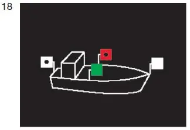
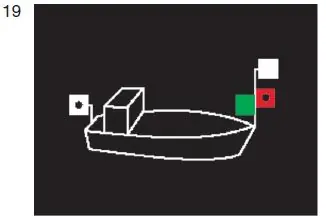
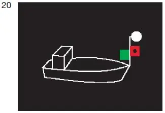
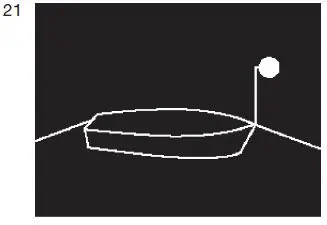
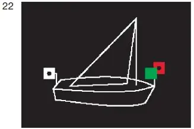
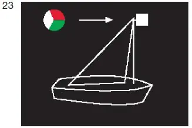
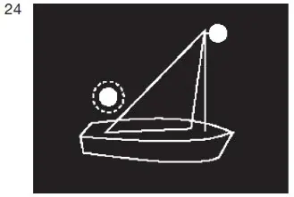
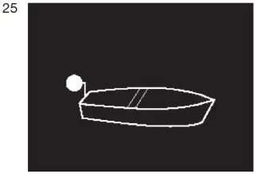
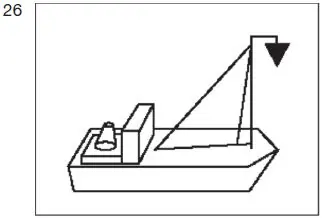

§ 3.13 Bezeichnung der Kleinfahrzeuge in Fahrt(Anlage 3: Bild 18, 19, 20, 21, 22, 23, 24, 25, 26)
Binnenschifffahrtsstraßen-Ordnung
1. Ein einzeln fahrendes Kleinfahrzeug mit Maschinenantrieb muss bei Nacht führen: entweder
a) ein Topplicht, jedoch hell statt stark, in gleicher Höhe wie die Seitenlichter und mindestens 1,00 m vor diesen; b) Seitenlichter, die gewöhnliche Lichter sein dürfen; sie müssen in gleicher Höhe und in einer Ebene senkrecht zur Längsachse des Fahrzeugs gesetzt sein und innenbords derart abgeblendet sein, dass das grüne Licht nicht von Backbord, das rote Licht nicht von Steuerbord gesehen werden kann; c) ein Hecklicht; |  |
oder
d) ein Topplicht, jedoch hell statt stark, mindestens 1,00 m höher als die Seitenlichter; e) Seitenlichter, die gewöhnliche Lichter sein dürfen; diese können aa) in gleicher Höhe und in einer Ebene senkrecht zur Längsachse des Fahrzeugs oder bb) unmittelbar nebeneinander oder in einer einzigen Laterne am oder nahe am Bug in der Schiffsachse gesetzt sein; im Falle des Doppelbuchstaben aa müssen sie innenbords derart abgeblendet sein, dass das grüne Licht nicht von Backbord, das rote Licht nicht von Steuerbord gesehen werden kann; |  |
f) ein Hecklicht; dieses Licht darf unter der Voraussetzung entfallen, dass anstelle des Topplichtes nach Buchstabe d ein von allen Seiten sichtbares weißes helles Licht geführt wird. |  |
2. Schleppt ein Kleinfahrzeug ausschließlich Kleinfahrzeuge oder führt es nur solche längsseits gekuppelt, muss es bei Nacht die Lichter nach Nummer 1 führen.
3. Ein geschlepptes oder längsseits gekuppeltes Kleinfahrzeug muss bei Nacht ein von allen Seiten sichtbares weißes gewöhnliches Licht führen. Dies gilt nicht für die Beiboote des Fahrzeugs. |  |
4. Ein einzeln fahrendes Kleinfahrzeug unter Segel muss bei Nacht führen: entweder
a) die Seitenlichter nach Nummer 1 Buchstabe e und ein Hecklicht |  |
oder b) diese Seitenlichter und das Hecklicht in einer einzigen Laterne am Topp |  |
oder c) ein von allen Seiten sichtbares weißes gewöhnliches Licht und bei der Annäherung anderer Fahrzeuge außerdem ein zweites weißes gewöhnliches Licht zeigen. |  |
5. Ein einzeln weder mit Maschinenantrieb noch unter Segel fahrendes Kleinfahrzeug muss bei Nacht ein von allen Seiten sichtbares weißes gewöhnliches Licht führen. Ein Beiboot, auf das die gleichen Voraus- setzungen zutreffen, braucht dieses Licht jedoch nur bei der Annäherung eines anderen Fahrzeugs zu zeigen. |  |
6. Ein Kleinfahrzeug unter Segel, das gleichzeitig mit Maschinenantrieb fährt, muss bei Tag einen schwarzen Kegel mit der Spitze nach unten, so hoch wie möglich an einer Stelle, an der er am besten sichtbar ist, führen. |  |